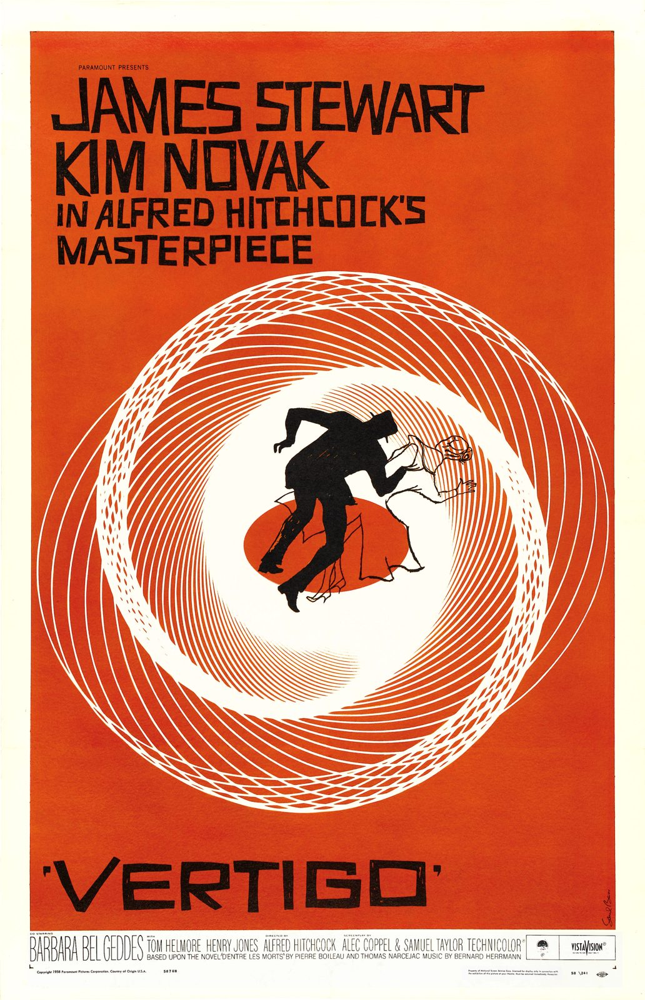

References / Poster / 374
Vertigo poster
A white line spiral on flat red-orange pulls two small figures into its center, under hand-cut capitals that lean and bounce.
- Source
- Wikimedia Commons: Vertigomovie restoration.jpg
- Creator
- Saul Bass
- Made
- 1958
- Style
- Mid-century modern (agent-proposed, not yet reviewed by a person)
- Moods
- Dizzy, graphic, tense
- Evidence
- Downloaded and inspected the Commons restoration (2703 × 4189 px, stored here at 1032 × 1600). Adam Cuerden restored the scan on Commons by removing fold marks and blemishes. No museum copy was checked.
- Reviewed
- Rights
- Open license, stored. License: public domain. Rights policy

Context
Theatrical poster for Alfred Hitchcock’s film, released by Paramount in 1958. Commons credits the artwork to Saul Bass and cites Adrian Curry’s Movie Poster of the Week column. Commons.
The foot of the poster carries “Copyright 1958 Paramount Pictures Corporation. Country of Origin U.S.A.”. Commons states that a Copyright Office catalog search found no renewal. Commons.
Observed
- The whole sheet is one flat red-orange field inside a thin off-white margin.
- A large spiral of fine white lines fills the middle. Its lines cross into a lattice at the outer turns.
- At the center a black silhouette of a man and a line drawing of a woman fall together over a small red-orange ellipse.
- “JAMES STEWART”, “KIM NOVAK”, and “IN ALFRED HITCHCOCK’S MASTERPIECE” are black capitals with rough, cut edges and uneven letter widths.
- “VERTIGO” at the foot is in wide, heavy black capitals with notched, hand-cut strokes, between single quotation marks.
- The credit block below the field is a condensed grotesque on off-white.
Why it belongs
The lettering is the most transferable part: capitals cut or drawn by hand, with uneven widths and a slight bounce, next to a plain grotesque for the credits.
Measured on the stored image, the accent chroma is 0.69 with one hue family. The poster is flatter and more saturated than the warm, multi-hue textile side of the style.
Borrow
Draw the heading as rough, hand-cut capitals and set the small print in a plain grotesque.
Put a single line-drawn motif (a spiral, a starburst) on a flat colored ground and let it carry the page.
Measured
Machine-extracted by tools/image-traits.py on . Full measurement.
- Mean chroma
- 0.45
- Palette
- #da4b18 41%
- #fefdf5 25%
- #ce371b 6%
- #1c110e 5%
- #e8baa1 3%
- #e2a68b 3%
- #ebe1d5 3%
- #edcfb8 2%

